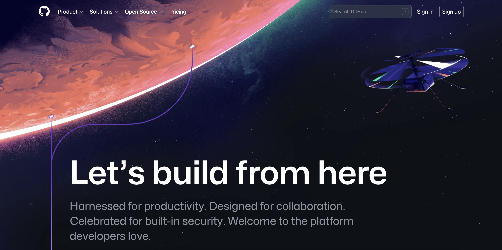
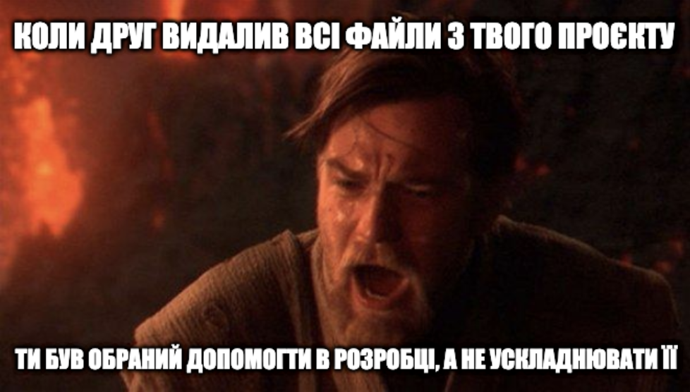
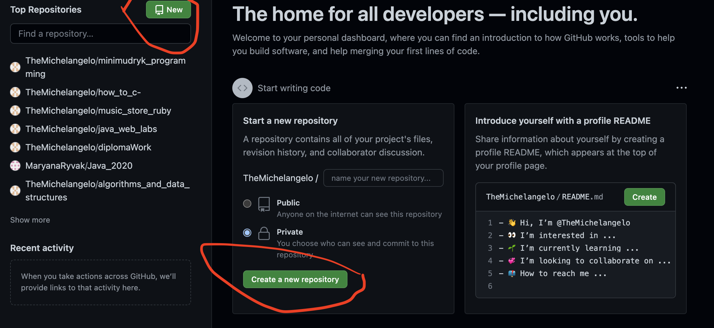
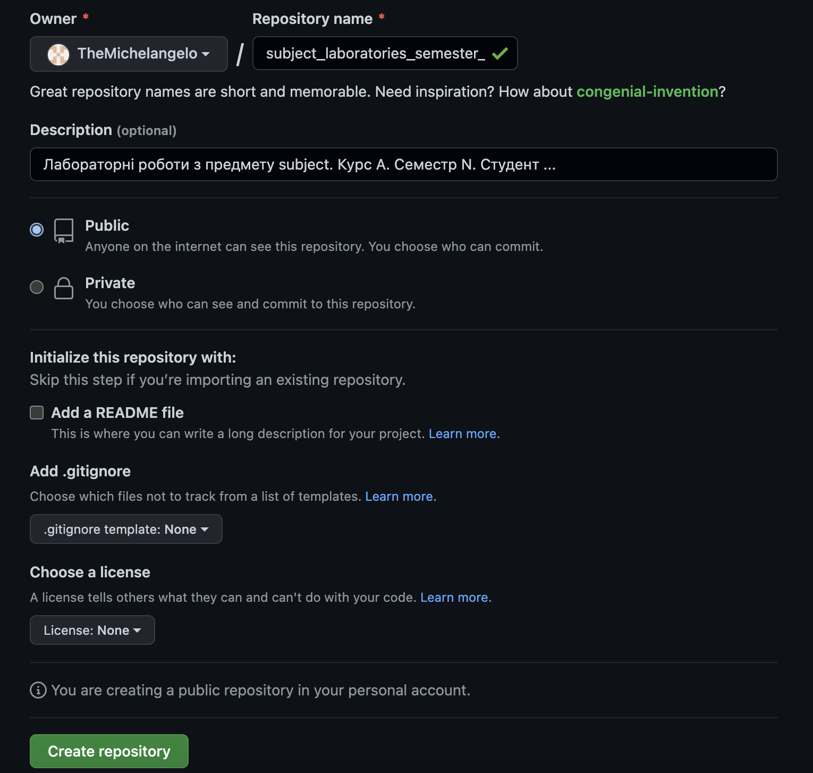
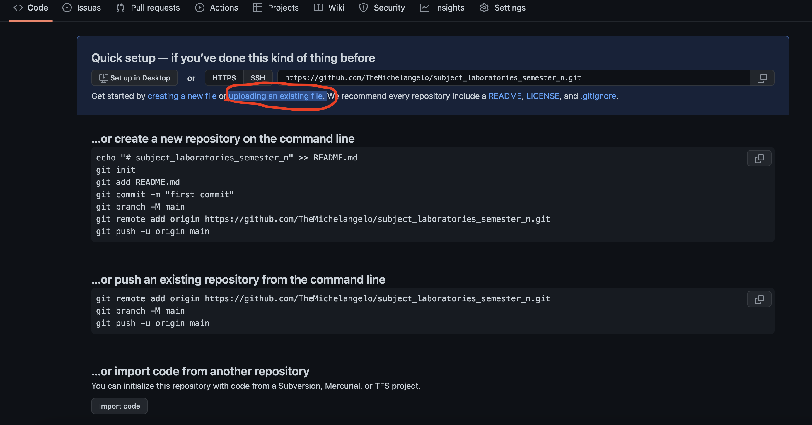

Що таке система контролю версій
У вас бувало таке, що ви думаєте як написати програму, пробуєте вирішити задачу, довго пишете код і зрозуміли що попередній варіант працював краще/вибило світло і нічого не збереглось/файл загубився (виберіть свій варіант болю). Або можливо вам треба було перекинути програму другу і ви кидати її текстом,який обрізано в 100500 повідомлень/ файлом, який антивірус друга видалив як вірус/пхали все в архів а потім він не відкривася?Що ж, насправді ці проблеми існують стільки ж часу, скільки і комп'ютери, але програмісти дуже себелюбні, тому перш за все вирішують проблеми, які самі собі й створюють, тож рішення є - це система контролю версій.
Система контролю версій - інструмент, який дозволяє зберегти проміжні зміни в коді. Системи керування версіями зазвичай використовуються при розробці програмного забезпечення для відстеження, документування та контролю над поступовими змінами в електронних документах: у вихідному коді застосунків, кресленнях, електронних моделях та інших документах, над змінами яких одночасно працюють декілька людей.
Кожна версія позначається унікальною цифрою чи літерою, зміни документу занотовуються. Зазвичай також зберігаються дані про автора зробленої зміни та її час.
Існують два основні типи систем керування версіями: з централізованим сховищем та розподіленим.
Система збереження історії редагувань статей, що застосовується у Вікіпедії є прикладом системи керування версіями.
Github як приклад СКВ
Cистеми контролю версій поділяються на різні категорії, деякі навіть бувають вбудованими в
середовище програмування. Однією з найпопулярніших систем є Github.

Натиснувши на кнопку Sign up і пройшовши невелику реєстрацію ми отримуємо доступ до власного робочого простору,
в рамках якого можемо створювати проєкти і працювати з ними. Ми можемо створювати як публічні так і приватні проєкти.
Будь-який створений проєкт можна змінити з публічного на приватний і навпаки. Доступ до публічних проєктів мають усі користувачі сервісу.
Натомість доступ до приватних має лиш власник і обрані користувачі, яким власник надав доступ.

Основні можливості сервісу Github
То що ж можна зробити використовуючи Github?
Перш за все - створити проєкт. Для цього необхідно натиснути на кнопочку new або create new repository.

Після цього необхідно заповнити інформацію відносно вашого проєкту і натиснути кнопку create repository. Наприклад

Наступне, що ви побачите буде це вікно. Ми до нього ще повернемось в наступних пунктах. Наразі нас цікавить тільки підпис uploading an existing file.
Натискаємо на нього і переходимо за посиланням.

Тепер необхідно обрати файли, які ви бажаєте завантажити і зберегти і додати повідомлення-причину збереження. Потім необхідно натиснути
на кнопку commit changes.
Вітаю, ви зберегли(закомітили) свої перші зміни. Ви неперевершині!!!